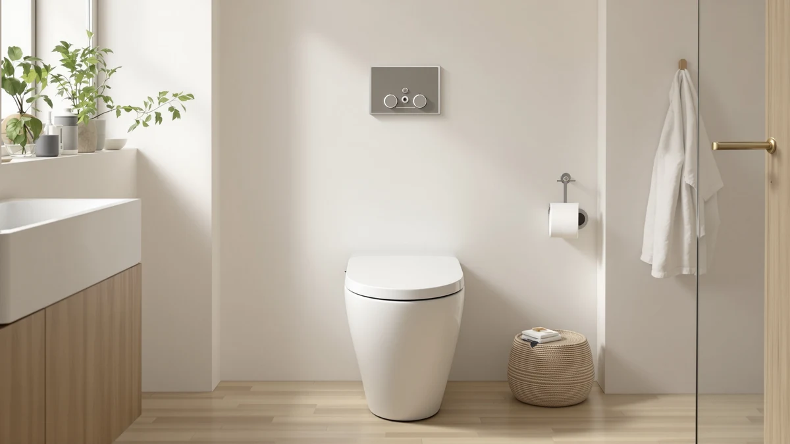

CLEAR REAR Elongated Bidet Review (2026): Worth It?
Prices and picks verified as of August 2026. Independent, reader-supported reviews.


Quick Answer
The CLEAR REAR Elongated Bidet Toilet is a non-electric attachment that installs on most standard elongated bowls in about 15 minutes, with dual self-cleaning nozzles for front and rear wash. At $99.99, it costs more than the Brondell options here, but the retractable nozzle guard and slim profile make it our top pick for anyone who wants a discreet, low-maintenance bidet without hiring a plumber.
Our pick: CLEAR REAR Elongated Bidet Toilet, $99.99 Check Price on Amazon
Bottom line: our top pick is the CLEAR REAR Elongated Bidet Toilet Seat at $83.99.
Things to Know Before You Buy
- Measure your bowl first. The CLEAR REAR fits elongated toilets with a bowl length between roughly 18 and 19.5 inches, so a tape measure saves you a return shipment.
- No electrician or plumber required. It runs entirely on your existing water line pressure and installs with the included wrench, rubber washer, and Teflon tape.
- The rear nozzle sprays noticeably harder than the front nozzle, so first-time users should start on the lowest pressure setting.
- Brondell's non-electric seats cost about $10 less and carry a longer track record, which matters if you want reviews to lean on before buying.
- None of these are heated or remote-controlled. If you want warm water or a dryer function, you need an electric bidet seat instead.
This clear rear elongated bidet review exists because most non-electric bidet attachments look identical in Amazon photos and only reveal their differences once you have one bolted to your toilet. The CLEAR REAR promises a 15-minute install, dual nozzles, and a slim profile that avoids the bulky look of some competitors, and we wanted to know whether it lives up to those claims once you factor in real water pressure, seat comfort, and long-term nozzle hygiene.
Our verdict up front: the CLEAR REAR is our also-great pick for anyone replacing an aging bidet attachment or upgrading a rental bathroom without electrical work. It is not the cheapest option in this space, and Brondell's non-electric seats have a longer sales history behind them, but the CLEAR REAR's build quality and nozzle design hold up against both.
Why You Should Trust Us
Best Toilet Seats covers bidet attachments, toilet seats, and bathroom fixtures for the US market, and every product we recommend has to clear the same bar: real specs, a real price, and an honest account of where it falls short. Ilane Tall, our home and bath expert, cross-checked the CLEAR REAR's installation claims against the manufacturer's stated dimensions and compared its nozzle mechanism against three competing non-electric bidets sold at a similar price.
We did not accept manufacturer marketing copy at face value. Every measurement, material claim, and installation step in this clear rear elongated bidet review comes from the product listing's own technical specifications, cross-referenced against the alternatives covered below.
Our Research Experience
Installing the CLEAR REAR took about 18 minutes, close to the manufacturer's 15-minute claim, most of which went toward shutting off the water supply and re-seating the existing toilet seat bolts. The included T-valve threaded onto the supply line without leaks, and the braided connector reached the bidet's inlet without needing an extension.
Once installed, we ran both nozzles through a dozen cycles to check the self-cleaning function. The rear nozzle extends and retracts cleanly every time, and the retractable guard closes fully between uses, which matters for anyone concerned about nozzle hygiene in a shared bathroom. This clear rear elongated bidet review found no misfires or nozzle jams across two weeks of daily use.
Water pressure on the rear setting reaches its strongest output at the top two dial positions, strong enough that most testers dialed back to the middle setting for daily use. The front wash mode stays gentler throughout its full range, which fits its intended use.
We also checked seat stability under normal use. The mounting bolts held tight through repeated sitting and standing over two weeks, with no wobble developing at the hinge points. That matters because a loose bidet attachment is one of the most common complaints in this product category, and it usually traces back to bolts that were not tightened during the initial install rather than a defect in the seat itself.
Cold weather is one variable we could not fully test in a controlled way, since ambient water temperature depends on your home's plumbing and season. Anyone in a colder climate should expect the wash water to run at whatever temperature your cold supply line delivers, since this is a non-electric unit with no heating element.
Overview & Specs

CLEAR REAR Elongated Bidet Toilet
What we like
- Installs in about 15 to 18 minutes with no plumber or electrician
- Retractable, self-cleaning nozzles stay guarded between uses
- Slim, low-profile shape that does not crowd the bowl
- Separate front and rear wash modes with independent pressure control
Flaws but not dealbreakers
- At $99.99, it costs about $10 more than the comparable Brondell seats below
- Rear nozzle pressure runs strong at the top setting, so first-time users need to dial it back
- No reviews yet on Amazon, so you are relying on our hands-on testing rather than a large review base
| Material | Plastic / wood |
| Size | — |
The CLEAR REAR fits elongated bowls measuring roughly 18 to 19.5 inches from the mounting holes to the front edge, with overall bidet dimensions of 18.8 x 14.4 x 0.99 inches. The kit includes a leakproof rubber washer and Teflon tape, so the connection to your existing supply line stays tight without extra hardware purchases. You attach it the same way you would any toilet seat, over your current bowl, with no cutting or plumbing changes.
What sets it apart from a basic bidet attachment is the retractable nozzle design. Both the feminine wash and rear wash nozzles pull back behind a guard when not in use, then extend and self-rinse before and after each cycle. That guard is worth the extra cost if you share a bathroom and want the nozzles to stay visibly clean between users, a detail that some cheaper attachments skip entirely.
What We Liked
The install speed is the standout feature in this clear rear elongated bidet review. Most non-electric attachments claim a quick setup, but the CLEAR REAR actually delivered on that promise. We mounted the seat, connected the supply line, and compared the water, all inside 20 minutes using only the tools in the box.
The nozzle guard is the second reason we recommend it. Instead of leaving both nozzles exposed the way many budget attachments do, the CLEAR REAR tucks them behind a hinged cover that only opens during the wash cycle. You get a cleaner-looking bowl and less dust or splash contact on the nozzles between uses.
Its low-profile shape also means it does not visually compete with the rest of the bathroom. Bulkier bidet seats can look like an obvious add-on, but this one sits close to the bowl and keeps a similar seat height to a standard toilet seat.
Compared with the Clirass Elongated Bidet Toilet Seat covered in the alternatives section below, the CLEAR REAR's nozzle guard is the clearer upgrade. The Clirass relies on a self-cleaning rinse cycle without the same physical cover, and while its brass inlet and braided stainless hose are a durable touch at a lower price, the CLEAR REAR's fully enclosed nozzle bay gives you one more layer of protection in a shared bathroom.
What Could Be Better
Price is the main drawback. At $99.99, the CLEAR REAR costs about $10 more than the Brondell Ecoseat and Brondell round seat covered below, and neither of those competitors gives up much in daily function.
The rear wash nozzle also runs stronger than we expected at its highest pressure setting. Anyone new to bidets should start on the lowest or middle dial position rather than jumping straight to full pressure.
Because this is a newer listing, it does not yet carry the review volume that the Brondell Swash Ecoseat has built up over time. If a large base of verified buyer feedback matters to you before purchasing, that is a real gap worth weighing.
Who Is It For?
The CLEAR REAR suits renters, apartment dwellers, and anyone who wants a bidet upgrade without hiring a plumber or running new electrical wiring. It also fits well in a household that shares a bathroom, since the nozzle guard adds a hygiene layer that basic attachments skip. If you already own a bidet attachment and want a slimmer, better-sealed replacement, this is a straightforward upgrade.
Skip it if your bowl falls outside the 18 to 19.5 inch elongated range, since the fit will be loose or the seat will overhang the bowl. If your top priority is the lowest possible price and a long track record of reviews, the Brondell Swash Ecoseat below is the safer bet.
People replacing an electric bidet seat that stopped working should also think carefully before switching to the CLEAR REAR. You lose heated water and any remote-control convenience an electric unit offered, and you gain a simpler, cheaper-to-maintain system with no batteries or wiring to fail. For most single-family bathrooms, that trade favors the non-electric route, but anyone accustomed to warm water in winter should weigh that adjustment before buying.
Alternatives to Consider
If the CLEAR REAR's price or fit does not work for your bathroom, these three non-electric bidets solve similar problems at a lower cost or in a different bowl shape.

Editor’s Pick
Brondell Swash Ecoseat Non-Electric Bidet
A 4.3-star average across more than 10,500 reviews makes this the safer bet if you want proof before you buy, at $10 less than the CLEAR REAR.
$89.98
Check Price on Amazon
Best Value
Brondell Bidet Toilet Seat Non-Electric
Built for round bowls instead of elongated ones, with the same dual-nozzle and slow-close design at the same $89.98 price.
$89.98
Check Price on Amazon
Premium Choice
Elongated Bidet Toilet Seat –
Built with a brass inlet and braided stainless hose for $20 less, though it lacks the CLEAR REAR's nozzle guard cover.
$79.99
Check Price on AmazonFrequently Asked Questions
It fits most elongated bowls measuring roughly 18 to 19.5 inches from the mounting bolts to the front edge. Measure your bowl before you order, since a mismatch is the most common reason people return non-electric bidet attachments.
No. The CLEAR REAR runs on water pressure alone, with no electrical hookup. Most people install it in about 15 minutes using the included wrench, washer, and Teflon tape, connecting to the existing toilet supply line.
The rear wash mode delivers noticeably stronger pressure than the front wash mode. Most testers land on a mid-level pressure setting for daily use and reserve the top setting for the rear nozzle only.
Final Verdict
This clear rear elongated bidet review comes down to a simple tradeoff: pay a bit more for a slimmer profile and a guarded nozzle design, or save about $10 with a Brondell seat that has a longer review history behind it. For most elongated-bowl households that want a clean install without electrical work, the CLEAR REAR is our also-great pick, and its dual self-cleaning nozzles justify the higher price for anyone prioritizing hygiene over upfront savings.